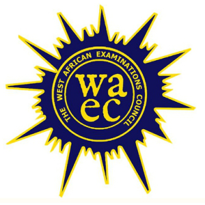
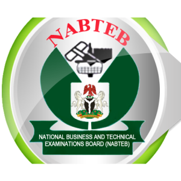
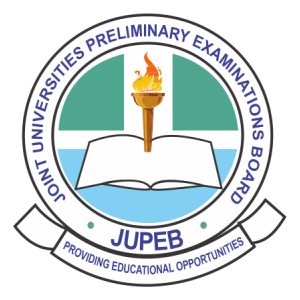
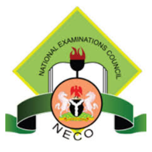
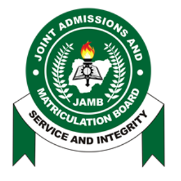
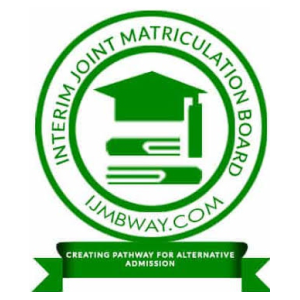

|  | The West African Examinations Council |  | National Business and Technical Examinations Board |  | Joint Universities Preliminary Examinations Board |
|---|---|---|---|---|---|
|  | National Examinations Council |  | Joint Admission and Matriculation Board |  | Interim Joint Matriculation Board |
West African Examinations Council (WAEC) is an examination board established by law to determine the examinations required in the public interest in the English-speaking West African countries, to conduct the examinations and to award certificates comparable to those of equivalent examing authorities internationally. It was established in 1952, the council has contributed to education in Anglophonic countries of West Africa (Ghana, Nigeria, Sierra Leone, Liberia, and the Gambia), with the number of examinations they have coordinated, and certificates they have issued. They also formed an endowment fund, to contribute to the education in West Africa, through lectures, and aid to those who cannot afford education. Since established it continues to be one of the biggest and most globally recognized exams in West Africa.
Visit https://www.waecdirect.org for more details.
HOW TO CHECK WAEC RESULT 2022
1. Go to WAEC 2022 reult checking portal at https://www.waecdirect.org
2. Enter your WAEC Examination Number in the required column
3. Select your Examination Year i.e. 2022.
4. Select your Examination Type i.e. SCHOOL CANDIDATE RESULT
5. Enter the Card Serial Number
6. Enter the Card PIN
7. Finally, click "Submit" button to get your 2022 WAEC Result.
HOW TO CHECK WAEC RESULT VIA SMS 2022
Send SMS in the format below:
WAEC*ExamNo*PIN*ExamYear
To short-code 32327 (MTN, Airtel & Glo subscribers)
For example: WAEC*2340581028*123456789012*2022
Note: Ensure you adhere strictly to the format above. There should be no space in the message. Wait for your result to be delivered to your phone via SMS. (SMS Cost N30 only).
National Examinations Council (also knowns as NECO) is an examination body in Nigeria that conducts the Senior Secondary Certificate Examination and the General Certificatein in Education (known as NECO GCE) in June/July and November/December respectively. NECO is an Examination body in Nigeria which established in April 1999, about 23 years ago and the services are SSCE, BECE and NCEE under the unbrellar of the Registrar Ibrahim Dnatani.
Visit https://www.result.neco.gov.ng for more details.
The Joint Admission and Matriculation Board (JAMB) is a Nigerian entrance examination board for tertiary-level institutions. The board conducts entrance Unified Tertiary Matriculation Examination for prospective undergraduates into Nigerian Universities. The board is also charged with the responsibility to administer similar examinations for applicants to Nigerian public and private monotechnics, polytechnics, and colleges of educations. Monotechnics like Universities either private or public, federal or state and polytechnics either private or poblic to study in different levels of education like Ordinary National Diploma (ND) and Higher National Diploma (HND). All of these candidates must have obtained the West Africa School Certificate, now West African Examinations Council, WAEC, or its equivalent, National Examination Council (Nigeria), NECO. JAMB is Examination Nigerian board and it was founded in 1978 about 44 years ago. Visit https://www.jamb.gov.ng for more details.
The pioneer Registrar was Michael Saidu Angulu, who served from inception in 1978 until 1986. The current Registrar of JAMB is Ishaq Oloyede, who was appointed by President Muhammadu Buhari in August 2016.
HOW TO CHECK JAMB RESULT VIA SMS 2022
Send SMS in the format below:
Send UTMERESULT
To short-code 55019 with your registration number (MTN, Airtel & Glo subscribers). Note: (SMS Cost N50 only).
Joint Universities Preliminary Examination Board (JUPEB) & Interim Joint Matriculation Admission Board (IJMB) is a new advanced level of examination body recently established and coordinatedby the University of Lagos in order to gain admission into 200level in Nigerian Universities like OAU, UI, UNN, Uniben, FUOYE, LASU, AAU, etc without JAMB. JUPEB is a National Examinations body approved by the Federal Government of Nigeria in December 2013. It was formally established in April 2014 by a consortium of ten (10) partnering universities led by the University of Lagos. The program is long for ten months and divided into two semesters in which you and your ward will go through and make final result, probably scoring a minimum of 5 points out of the total of 16 points, you or that your child will have the opportunity of gaining admission into 200level of any University of choice whether is of federal, state or private. Visit https://www.jupebadmissions.com
IJMB last for nine months and it is coordinated by Ahmadu Bello University, ABU Zaria.
REQUIREMENTS:
Applicants must pass five subjects at credit level at not more than two sittings in the SSCE/GCE organized by WAEC, NECO, NABTEB and should include the major subjects of study.
National Business and Technical Examinations Board (NABTEB), is Nigerian examination board that is conducting examinations for technical and business innovation colleges in Nigeria. The National Business and Technical Examinations Board (NABTEB) was established under the Decree No. 70 (now Act 70) of the 1993 constitution. NABTEB body services are National Technical Certificate (NTC), Advanced National Technical Certificate (ANTC), National Business Certificate (NBC), Advanced National Business Certificate (ANBC), and Modular Trade Certificate (MTC). The current Registrar is Ifeoma Mercy Isiugo-Abanihe. Visit https://www.nabteb.gov.ng for more details.
Our Currently Enrolled Students
Our Previous Students
Our Previous Students
Our Previous Aspirant
For making this world & my life better!!!
Thank you for the good services.
| Augustine Adegoke Designer |
Segun Adegoke CEO |
|---|